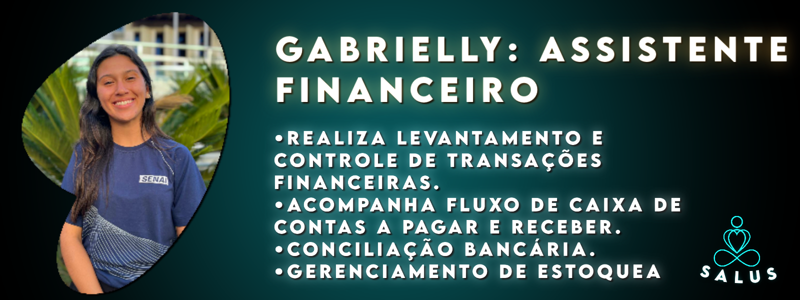

Somos uma equipe comprometida em fornecer soluções inovadoras e de alta qualidade para nossos clientes. Nossa missão é ajudar nossos clientes a alcançar seus objetivos de forma eficaz e eficiente, sempre buscando a excelência em tudo o que fazemos.
Preço justo, atendimento prático e muita criatividade são os pilares que sustentam nossa atuação. Com mais de 5 anos de experiência no mercado, já solucionamos diversas demandas em toda região. Estamos preparados para orientar e executar a o objetivo da sua empresa em diversos canais, sejam eles tradicionais ou virtuais. Nosso compromisso é adaptar nossos serviços aos seus objetivos de mercado e ao seu orçamento, garantindo resultados que superem suas expectativas.
Conheça os nossos colaboradores
A Salus é uma empresa inovadora que se destaca no mercado por oferecer soluções completas em treinamento, consultoria e criação de dispositivos 4.0, todos voltados para a área de saúde e bem-estar.
Nossa equipe é composta por colaboradores altamente qualificados e comprometidos, que são a espinha dorsal do nosso sucesso. Entre eles, temos especialistas em pesquisa e desenvolvimento, consultores experientes, engenheiros de tecnologia avançada e profissionais de atendimento ao cliente. Cada membro da nossa equipe traz uma combinação única de habilidades e experiências que contribuem para a excelência dos nossos produtos e serviços.
No setor de treinamento, contamos com instrutores dedicados que utilizam métodos de ensino modernos e eficazes, preparando nossos clientes para enfrentar os desafios do mercado de saúde com confiança e competência.
Na área de consultoria, nossos especialistas oferecem soluções personalizadas e estratégicas, ajudando empresas a otimizar processos, implementar novas tecnologias e melhorar a eficiência operacional.
Quando se trata de criação de dispositivos 4.0, nossos engenheiros e desenvolvedores estão na vanguarda da inovação, projetando e fabricando equipamentos de última geração que atendem às necessidades mais exigentes do setor de saúde.
Com um ambiente de trabalho colaborativo e motivador, incentivamos o crescimento pessoal e profissional, garantindo que todos estejam alinhados com a missão e os valores da Salus. Nosso compromisso com a inovação, a ética e a excelência no atendimento se reflete em tudo o que fazemos, e estamos orgulhosos de trabalhar juntos para criar soluções que realmente façam a diferença na vida das pessoas.

Conheça Sobre Nossos Serviços!
A Salus é uma empresa especializada em saúde e segurança no trabalho, com um foco particular na saúde mental. Oferecemos dispositivos inovadores alinhados à Indústria 4.0, que monitoram e melhoram a saúde mental dos colaboradores em tempo real. Além disso, proporcionamos treinamentos abrangentes para capacitar os funcionários a lidar com problemas de saúde mental de forma eficaz e proativa, incluindo instruções detalhadas sobre o uso dos nossos dispositivos. Nossa missão é criar um ambiente de trabalho mais saudável, seguro e produtivo, combinando tecnologia avançada e educação contínua.
Treinamento
Treinamento para Lidar com Pessoas em Crise de Ansiedade: Passo a Passo!
A Indústria 4.0, também conhecida como a Quarta Revolução Industrial, está transformando a maneira como os processos industriais são conduzidos. Esta nova era é caracterizada pelo uso intensivo de tecnologias digitais e pela integração de sistemas cibernéticos com a Internet das Coisas (IoT). Dispositivos inteligentes são fundamentais para a Indústria 4.0, pois permitem a automação e a coleta de dados em tempo real. Um dos dispositivos mais versáteis e utilizados é o ESP32.